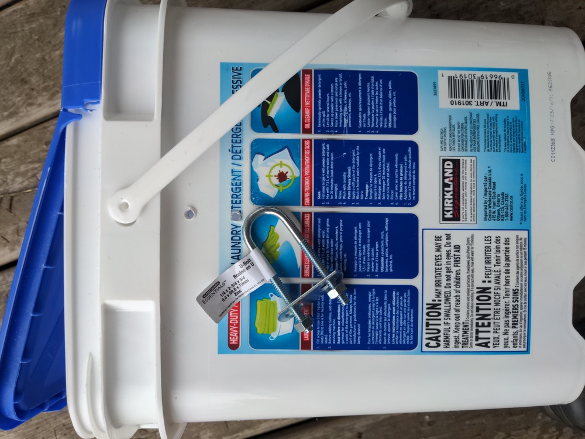
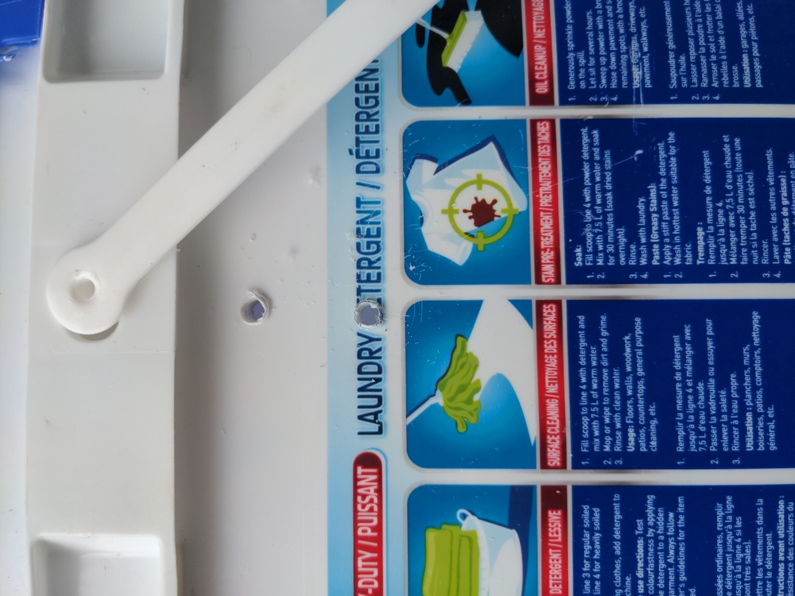
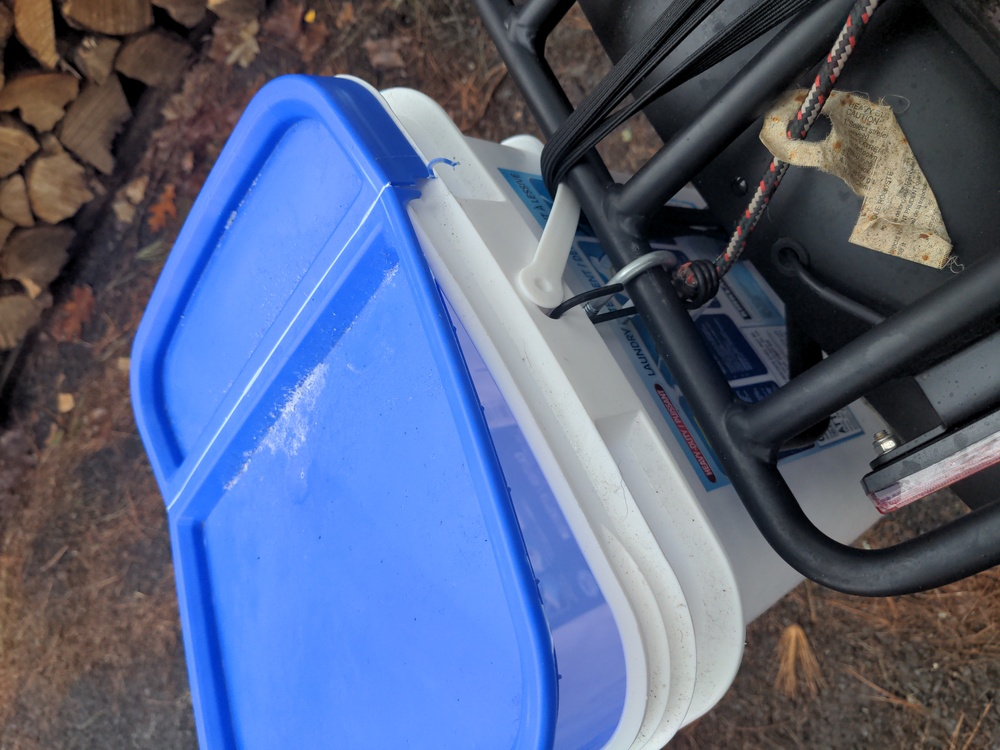

Making bike panniers out of buckets:
These instructions are based on this website, but with some modifications.
- Need a large square bucket such as the one shown here from laundry detergent, and a ubolt, and I also used a bungee to make it more secure (bounce less. This bucket is about 32cm tall x 30cm x 25cm. 2 ubolts might be better to make it more secure (bounce less). I initially tried 2 hooks and a bungee like in the linked instructions, however, the hooks fell off when I went over a bump, and I couldn't find better hooks without that problem.

- Drill 2 holes in the bucket matching the ubolt's screws. Before drilling the holes, measure and poke 2 small holes with a pen or something and make sure the small holes / marks are in the right spot. The holes can be slightly bigger than the screws because the screws have to be pushed into the holes.

- Holding the bucket against the bike rack, screw the ubolt in so it attaches around the rack.

Homepage Contact Me